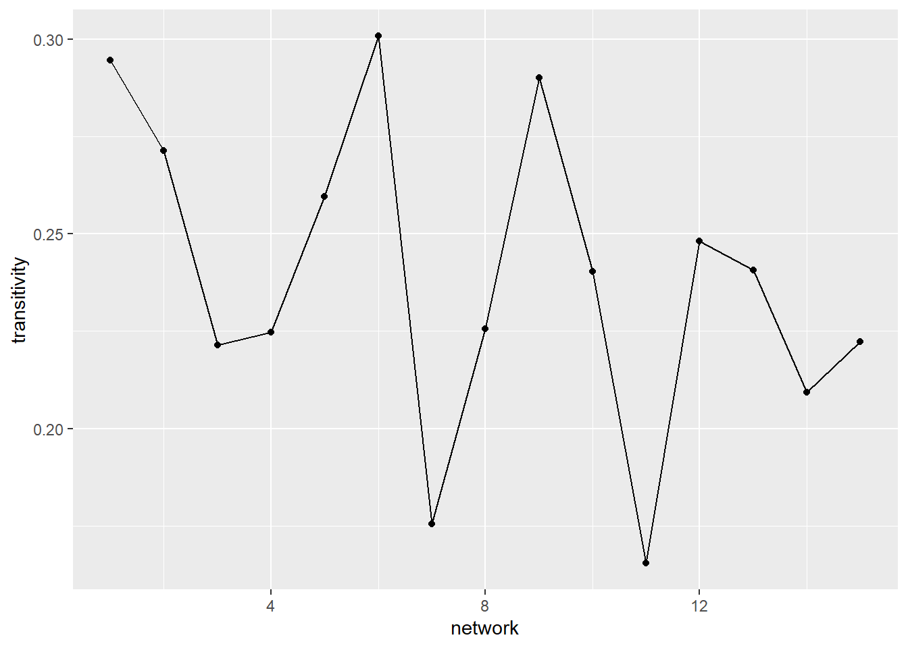
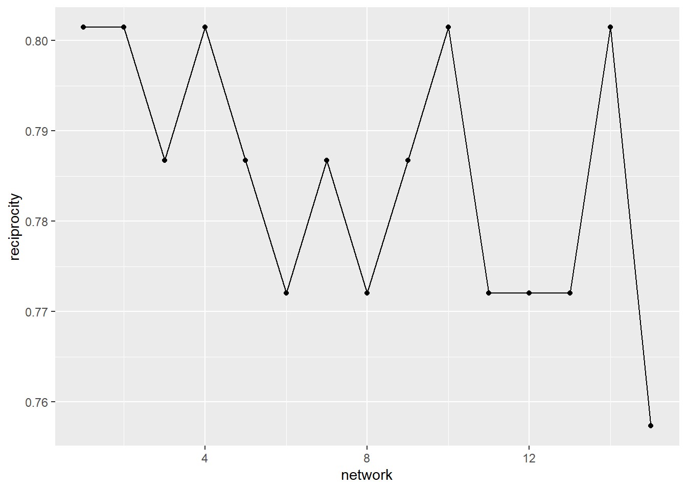
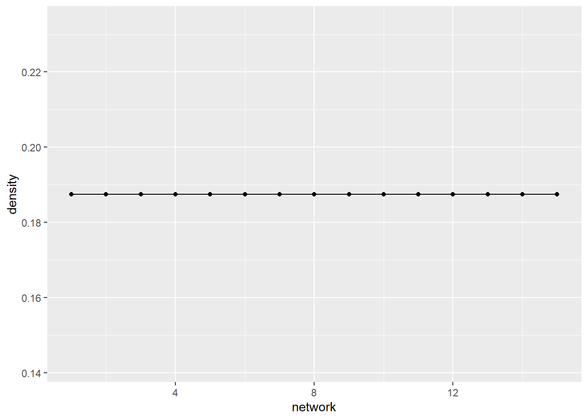
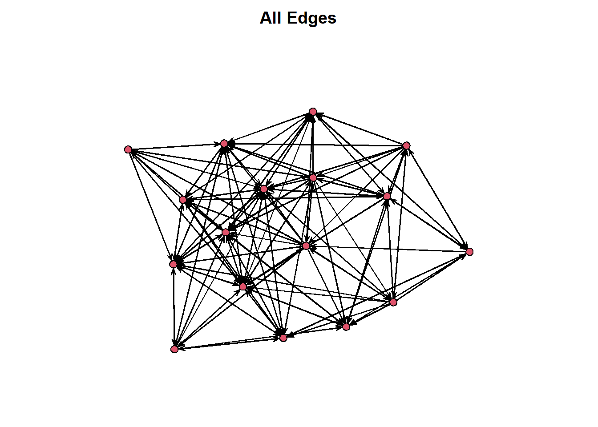
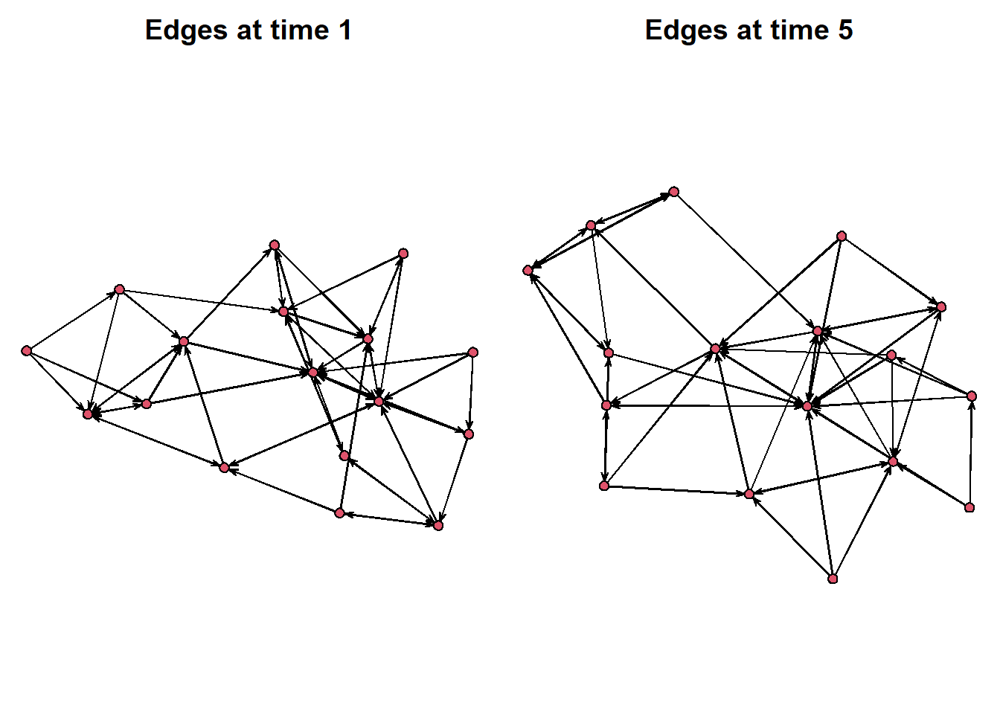
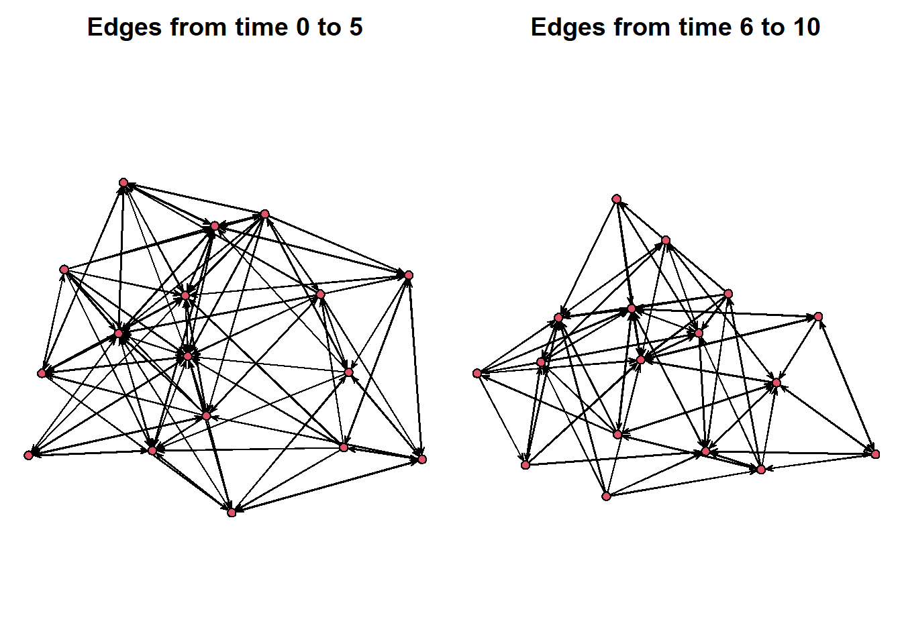
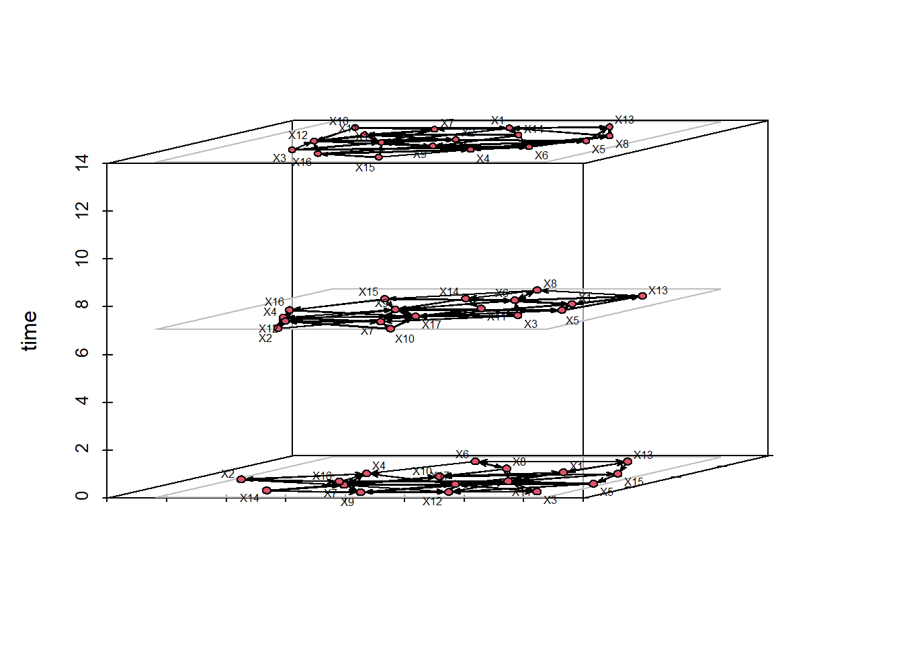
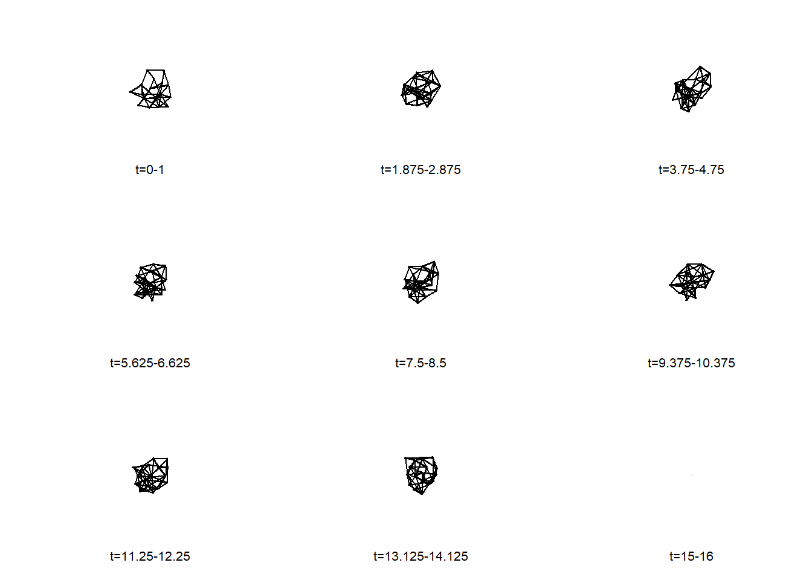
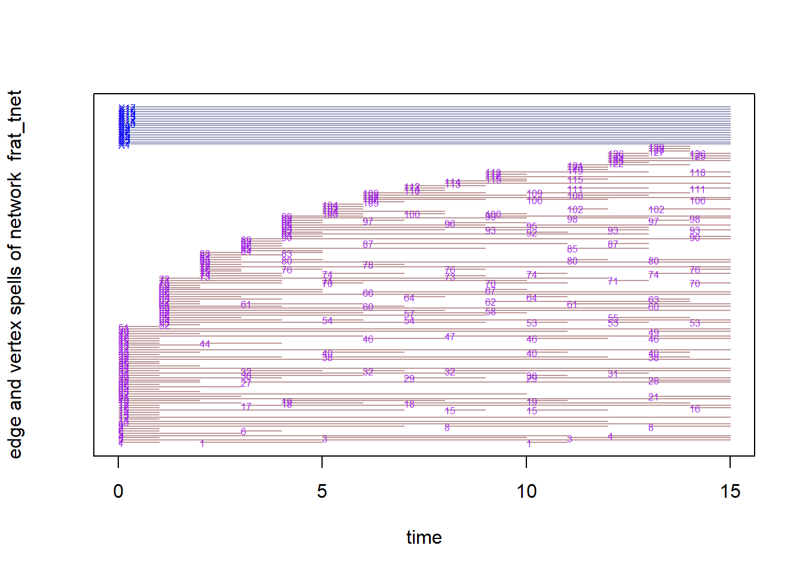
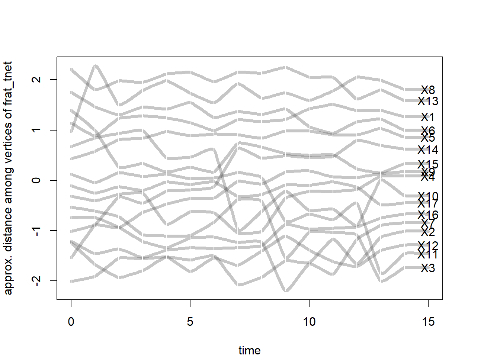

library(ndtv)
library(intronets)
library(tsna)
library(ggplot2)
library(dplyr)
library(htmlwidgets) # this helps us work with widgets in markdown
library(htmltools) #this allows the widgets to present in the markdown file15 Dynamic Networks
So far we have thought of networks as static, unchanging. However, the reality of relationships is that they change. A lot! Consider your friendships over the years, as you have grown your interactions with them have likely changed. Maybe some you are no longer friends with. Maybe you still think of them as friends, but you never talk. This reflects, what network scholars refer to, the dynamism of social networks.
Much of what we have covered extends to a longitudinal approach to social network analysis. For the sake of this chapter, we are going to cover a some basic structural analysis over time and then turn to some visualization techniques.
In this chapter, we are going to use the classic Newcomb Fraternity study, which examined the friendships between fraternity members at the University of Michigan over the course of the fall semester in 1956. These students provided weekly rankings of their friendships over this period. We recoded these numbers so that each tie represents a top-three friendship nomination during each time period. These ties are are directed, in that student A might nominate student B in their top-3, but student B might not.
In the chunk below, we load the data in and take a look. the frat_n object is a list of six network objects. Similar to the object we created in Chapter 11, this is a list. Unlike the ego network, however, this is the same group of individuals at different time periods (time points of the semester).
load_nets("frat_graphs.rda")
frat_n[[1]] Network attributes:
vertices = 17
directed = TRUE
hyper = FALSE
loops = FALSE
multiple = FALSE
bipartite = FALSE
total edges= 51
missing edges= 0
non-missing edges= 51
Vertex attribute names:
vertex.names
No edge attributes15.1 Network Statistics Over Time
We have talked about network metrics such as density and transitivity netsim.qmd. Such measures characterize the network in terms of how connected/disconnected the people are or how mutual the relationships are in the group. Measuring these sorts of things over time can tell a story.
First, we will construct a dataframe with some of the network characteristics overtime. Once we have these, we can plot them and describe the nature of this friendship group over the course of their semester.
The chunk below goes throughout our network list and pulls network characteristics of each. Specifically, we look at density, transitivity and reciprocity. We also count the number of nodes and edges in the networks. Note, the functions we are using here may look a little bit different to those we have used in previous chapters see Chapter 10. We are using the tsna package instead of igraph, so the functions are a little different but the maths behind them are the same.
net_stats <- data.frame(
network = seq_along(frat_n),
density = sapply(frat_n, gden),
transitivity = sapply(frat_n, gtrans),
reciprocity = sapply(frat_n, grecip),
v_count = sapply(frat_n, network.size),
e_count = sapply(frat_n, network.edgecount)
)Next, with our data in place, we can create a series of visualisations to tell stories about how this group evolves over time. Starting with transitivity—a measure of social closure or clustering—the graph below shows considerable fluctuation over time. An initial transitivity of 0.3 suggests that around 30% of connected triads in the network are closed, meaning that when two individuals share a common connection, they do not always form a fully connected group. The variation in transitivity over time indicates that small, tightly connected groups may be forming and dissolving as the network evolves.
ggplot(net_stats, aes(x = network, y = transitivity)) +
geom_line() +
geom_point()
A second pattern we may be interested in tracing over time is the extent to which a friendship nomination is returned (reciprocal). At first glance, the graph below suggests that, early in the semester, the friendship nominations were very mutual (over 0.8). While there is some fluctuation (some time slots even getting back up to the 0.8 mark), there is a steady decline in the reciprocity of ties over time. Again, this tells a story that there may be some decline in friendships over time (with fewer people returning friendship nominations). However, a closer read of the decline reveals that it only dips from just above 0.8 to 0.75.
ggplot(net_stats, aes(x = network, y = reciprocity)) +
geom_line() +
geom_point()
A third, and final example, is the groups density over time. This is a measure of how many observed ties there are vs. the number of ties that are possible. This graph shows that the density does not change over time.
ggplot(net_stats, aes(x = network, y = density)) +
geom_line() +
geom_point()
This, then, opens our minds to the possibility of analysing networks over time. The time slices enable us to measure changes in this group that reflect the friendship nominations they make.
15.2 Visualising Dynamic Networks
There are many more ways that visualise this group beyond just the statistics over time. First, though, we need to convert our frat_n object from a list into a network list. We do this by using the networkDynamic() function which goes through our list object and converts each element into a network. Note, that the order of your data translates directly to the time stamp that networkDynamic() gives it.
(frat_tnet <- networkDynamic(network.list=frat_n))Neither start or onsets specified, assuming start=0
Onsets and termini not specified, assuming each network in network.list should have a discrete spell of length 1
Argument base.net not specified, using first element of network.list instead
Created net.obs.period to describe network
Network observation period info:
Number of observation spells: 1
Maximal time range observed: 0 until 15
Temporal mode: discrete
Time unit: step
Suggested time increment: 1 NetworkDynamic properties:
distinct change times: 16
maximal time range: 0 until 15
Includes optional net.obs.period attribute:
Network observation period info:
Number of observation spells: 1
Maximal time range observed: 0 until 15
Temporal mode: discrete
Time unit: step
Suggested time increment: 1
Network attributes:
vertices = 17
directed = TRUE
hyper = FALSE
loops = FALSE
multiple = FALSE
bipartite = FALSE
net.obs.period: (not shown)
total edges= 129
missing edges= 0
non-missing edges= 129
Vertex attribute names:
active vertex.names
Edge attribute names:
active Note that if you are working on your own data and have separate network objects for each time stamp, then you will simply list them in the ‘network.list =’ option of the function above. Again, the order you list them in will be treated as the time stamp or transition point by networkDynamic().
This object presents as a single network containing multiple time ranges (0-15). The network maintains 17 vertices plus a total of 129 edges over time. Now let’s view the dynamic object as a data frame. The results present onset, terminus, tail, head, duration, and edge.id. The first row refers to a friendship nomination by student 1 (tail) to student 11 (head) that begins in time point 0 (onset) and lasts only until the next time period (terminus).
head(as.data.frame(frat_tnet)) onset terminus tail head onset.censored terminus.censored duration edge.id
1 0 1 1 11 FALSE FALSE 1 1
2 2 5 1 11 FALSE FALSE 3 1
3 10 11 1 11 FALSE FALSE 1 1
4 0 15 1 13 FALSE FALSE 15 2
5 0 1 1 17 FALSE FALSE 1 3
6 5 10 1 17 FALSE FALSE 5 3We are ready now to create some visualisations!!
Before you rush off and try plotting this object, take a look at this below. If we just plot the network object we end up with a single visualisation that collapses all of the time stamps into one static graph. This is not all that useful, unless you are hoping to see all the nominated friendships.
par(mar = c(0,0,2,0))
plot(frat_tnet, main = "All Edges")
Instead, tsna offers the option wihtin the plot() function to select which time point we want to visualise. See the graphs below, for example.
par(mar = c(0,0,2,0))
par(mfrow = c(1,2))
plot(network.extract(frat_tnet, at=1), main = "Edges at time 1")
plot(network.extract(frat_tnet, at=5), main = "Edges at time 5")
Or, we can select a window of time to look at. Using the onset and terminus options, we can select a window of time to look at. Below we create a side-by-side of the first five time points compared to the second five.
par(mar = c(0,0,2,0))
par(mfrow = c(1,2))
plot(network.extract(frat_tnet, onset=0, terminus=5), main = "Edges from time 0 to 5")
plot(network.extract(frat_tnet, onset=6, terminus=10), main = "Edges from time 6 to 10")
There are other ways to visualize these rather than a side-by-side plot. We can place the networks into a prism stacking them n top of each other. These time slices place the networks into a space where we can see multiple of the snapshots at one time. We select time = 0, 7 and 14 just as an example.
compute.animation(frat_tnet)No slice.par found, usingslice parameters:
start:0
end:15
interval:1
aggregate.dur:1
rule:latestCalculating layout for network slice from time 0 to 1Calculating layout for network slice from time 1 to 2Calculating layout for network slice from time 2 to 3Calculating layout for network slice from time 3 to 4Calculating layout for network slice from time 4 to 5Calculating layout for network slice from time 5 to 6Calculating layout for network slice from time 6 to 7Calculating layout for network slice from time 7 to 8Calculating layout for network slice from time 8 to 9Calculating layout for network slice from time 9 to 10Calculating layout for network slice from time 10 to 11Calculating layout for network slice from time 11 to 12Calculating layout for network slice from time 12 to 13Calculating layout for network slice from time 13 to 14Calculating layout for network slice from time 14 to 15Calculating layout for network slice from time 15 to 16timePrism(frat_tnet,at=c(0,7,14),
displaylabels=TRUE,planes = TRUE,
label.cex=0.5)
Alternatively, we can create what is called a filmstrip which splits each time slice into a separate facet of the same visualisation. This way, we can get a good look at how the network’s topology changes over time.
filmstrip(frat_tnet,displaylabels=F)
Finally, we can render a widget window that has a movie presenting the changes in the network over time. In doing so, this video enables a live visual presenting the transitions between each part of the semester where these frat bros nominated new friends.
render.d3movie(frat_tnet,output.mode = 'htmlWidget')caching 10 properties for slice 0caching 10 properties for slice 1caching 10 properties for slice 2caching 10 properties for slice 3caching 10 properties for slice 4caching 10 properties for slice 5caching 10 properties for slice 6caching 10 properties for slice 7caching 10 properties for slice 8caching 10 properties for slice 9caching 10 properties for slice 10caching 10 properties for slice 11caching 10 properties for slice 12caching 10 properties for slice 13caching 10 properties for slice 14caching 10 properties for slice 15loading ndtv-d3 animation widget...Unlike other visualizations we have presented so far, to access these kinds of videos outside of R, you need to export it as a html file to be opened in your browser. Here, we create a more customized version of our video and then show how to export it to your machine for future use.
render.d3movie(frat_tnet, usearrows = F, displaylabels = T, bg="black", vertex.border="black", vertex.col = "firebrick1", edge.col = "ivory", output.mode = 'htmlWidget') caching 10 properties for slice 0caching 10 properties for slice 1caching 10 properties for slice 2caching 10 properties for slice 3caching 10 properties for slice 4caching 10 properties for slice 5caching 10 properties for slice 6caching 10 properties for slice 7caching 10 properties for slice 8caching 10 properties for slice 9caching 10 properties for slice 10caching 10 properties for slice 11caching 10 properties for slice 12caching 10 properties for slice 13caching 10 properties for slice 14caching 10 properties for slice 15loading ndtv-d3 animation widget...Then we can store this video as an object and, using the browsable() and saveWidget() functions, export it as a html file to your working directory. We suggest using getwd() to find out where your files are going. Then, you can either open it from your files or you can use the browseURL() function in R to visualize it in your browser.
vid <- render.d3movie(frat_tnet, usearrows = F, displaylabels = T, bg="black", vertex.border="black", vertex.col = "firebrick1", edge.col = "ivory", output.mode = 'htmlWidget')
vid <- browsable(vid)
saveWidget(vid, file = "frat_video_SNA.html")
browseURL("frat_video_SNA.html")Finally, there are two other methods for visualizing networks over time that you may consider. These are more focuses on tracing the relationships over time and the similarity of relationships across nodes over time. First, is called a timeline plot which plots the activity of connections that nodes have over time. It is similar to a Gantt chart in which the X-axis reflects the passing of time. Each line shows the node and edge activity with the segments indicating whether the nodes are actively connecting. In sum, you can see this as a portrayal of whether the relationships in the entwork are stable or fluctuate.
The timeline below provides a sense of the stability of top-three friend relationships in this network based on the length of the lines. Short lines indicate brief friendships and long lines indicate lasting ones.
timeline(frat_tnet)
Second, the proximity.timeline() performs a similar function but plots nodes in 2D space where their proximity suggests whether they share similar network positions to each other. If their lines overlap at time points then they are considered similarly connected to others in the network or to each other. In other words, actors are closer when it takes fewer paths to get to one another. The vertical ordering of the node labels reflects similarity in social proximity across the time frame.
In this visual, we see some cllusters (overlapping lines consistantly) with some nodes moving towards those clusters or away from those. This suggests that there are friendship groups within this frat network that some people come into or out of over time. This timeline provides a sense of the stability of different friendships. For example, we can see that students 8 and 13 maintained close proximity throughout the semester. Other students (like student 11) appear to have explored more of the friendship space. We can also gain a sense of moments in time that involved substantial disruption in top friendship ties. The most disruption appears to have occurred right around the beginning of the semester (as students were establishing their close friendships) and also right around the time of midterm exams.
par(mar = c(4,4,4,4))
proximity.timeline(frat_tnet,default.dist=6,
mode='sammon',labels.at=15,vertex.cex=4)collapsing slice networks ...computing vertex positions using 1D sammon layout ... computing positions for slice 1 computing positions for slice 2 computing positions for slice 3 computing positions for slice 4 computing positions for slice 5 computing positions for slice 6 computing positions for slice 7 computing positions for slice 8 computing positions for slice 9 computing positions for slice 10 computing positions for slice 11 computing positions for slice 12 computing positions for slice 13 computing positions for slice 14 computing positions for slice 15rendering splines for each vertex ...
The Newcomb fraternity dataset was relatively unique during its time given the time-based component of the data. With greater access to internet and digital trace data, dynamic network data are now more readily available. These new forms of data provide even more opportunities to analyze and visualize social network dynamics.
15.3 References
For more on these frat friendship networks…
- Newcomb T. (1961). The acquaintance process. New York: Holt, Reinhard & Winston.